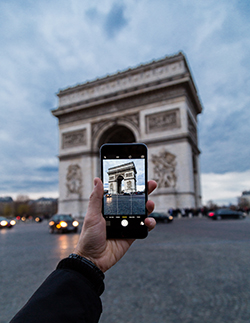

塞纳河上的周末
我很幸运能够在这个月里能够在巴黎旅行三天！在那里我和我的朋友看到了很多美景
第1天
在我们的第一天，我们来到蒙马特。第二站是艾菲尔铁塔（看看那幅美丽的照片！）

第2天
在第二天，我们去了香榭丽舍大道（Avenue des Champs Elysees）购物。我们看到的每一个人都穿着时尚的高度。购物结束后，我们参观了一些非常美丽的地方！我们去了巴黎圣母院。我们去了巴黎的马卡龙之旅，吃了这个城市所有最好的马卡龙。购物结束后，我们参观了卢浮宫

第3天
下图是我参观凯旋门的情况。很大！我们还去了奥赛博物馆。看到雷诺阿，莫奈和梵高的工作是完全令人叹为观止的。我惊讶地发现博物馆里还有许多雕塑，包括奥古斯特·罗丹，保罗·高更和阿尔弗雷德·巴里的雕塑。
